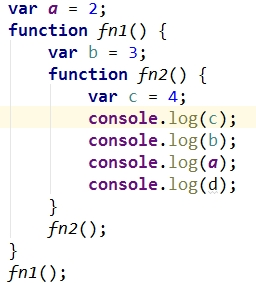

什么是ajax
应用场景
搜索时，关键字列表提示
Google地图
登录注册时错误检查
收获地址三级联动
ajax采用异步方式和后台进行交互，流程图如下(原理)：
ajax的优缺点
优点：
- 减轻服务器的负担，AJAX一般只从服务器获取只需要的数据。
- 无刷新页面更新，减少用户等待时间。
- 更好的客户体验，可以将一些服务器的工作转移到客户端完成，节约网络资源，提高用户体验。
- 基于标准化的对象，不需要安装特定的插件绝大多数的游览器都能执行
- 彻底将页面与数据分离。
缺点：
- 破坏了浏览器的回退功能。
- 页面需要局部刷新的时候，需要用ajax
ajax的请求流程
* 在发送请求之前: 创建XMLRequest对象, 并保存一些数据(回调函数, 请求方式, 请求路径, 是否是异步)
* req发送请求:
* 向ajax引擎发送一个发送http Ajax请求的命令, 并将数据交给它
* ajax引擎跟这些数据生成http数据格式的数据, 并发送http请求
* 服务器端接收到请求, 并调用对应的路由回调函数处理请求
* 服务器返回一个response响应给客户端
* Ajax引擎接收到response响应,
将响应数据保存到req的属性上(responseText/responseXML)
调用req对象的onreadystatechange函数
* req发送请求会立即完成(异步), 继续向下执行
开发方式
1.原生API
get方法相关代码
post方法相关代码
异步/同步相关代码
2.AjaxAPI
常用的方法是$.ajax()/$.get()/$.post()
get方法相关代码
post方法相关代码
三级联动相关代码
3.AngularAPI
1>get请求
//方式一
$http({
method: "GET",
url: "",
params: myParams,
paramSerializer: '$httpParamSerializerJQLike'
})
.success(function (data, status, headers, config) {
})
.error(function (data, status, headers, config) {
});
//方式二
$http.get(url)
.success(function (data, status, headers, config) {
})
.error(function (data, status, headers, config) {
});
get相关代码
2>post请
//方式一:
$http({
method: "POST",
url: "",
data: $httpParamSerializerJQLike(myData),
headers: {
'Content-Type': 'application/x-www-form-urlencoded'
}
})
.success(function (data, status, headers, config) {
})
.error(function (data, status, headers, config) {
});
//方式二
$http.post(url, data)
.success(function (data, status, headers, config) {
})
.error(function (data, status, headers, config) {
});
post相关代码
3>jsonp跨域请求
$http.jsonp(''http://localhost:3000/angular_jsonp?callback=JSON_CALLBACK&username=aa&age=33'')
.success(function (data) {
var json = $filter('json')(data);
console.log(json);
});
jsonp相关代码
跨域请求
最原始的跨域

jsonp相关代码
背后是通过script发送请求，步骤：客户端url?callback?服务器端var callback=req.query.callback;res.send(callback+'('
+json+')')
cors相关代码
步骤：客户端不做额外的工作，服务器端添加一个响应头res.set('Access-Control-Allow-Origin','*');
带有先导请求（options）的跨域请求
带有先导请求（options）的跨域请求，浏览器会自动先发送一个options方法的请求到服务器端，并
查看相应头里是否有Access-Control头部。值得注意的是options方法的请求并不会携带cookie，
也就是如果如果你的请求必须要登陆验证的话那么你就必须构造一个简单请求。
下面是一些常用的Access-Control头部
请求头
- Access-Control-Request-Method ： 先导请求中的请求头，告诉服务器真实请求的http方法
- Access-Control-Request-Headers ：先导请求中的请求头，告诉服务器真实请求的http请求头
相应头
- Access-Control-Allow-Origin ：服务器允许跨域请求的origin
- Access-Control-Expose-Headers ： 允许JavaScript读取的头部
- Access-Control-Allow-Credentials ：是否允许携带cookie
- Access-Control-Allow-Methods ：允许的请求方法
- Access-Control-Allow-Headers ：允许的请求头部
https://developer.mozilla.org/zh-TW/docs/HTTP/Access_control_CORS#Access-Control-Allow-Origin
JS高级部分
1.判断一个对象是否是函数
if(typeof a==='function' || a instanceof Function){
alert('a是一个函数');
}
2.一切引用类型都是对象
3.对象是若干属性的集合
原型与原型链
- 函数的protype属性
- 1.1). 每个函数都有一个prototype属性, 它默认指向一个对象(原型对象)
- 1.2). 原型对象中有一个属性constructor, 它指向函数对象
- object对象的方法都定义在Object的原型对象中,,object的原型对象的原型为null(没有父对象)
- 函数的实例对象自动拥有函数原型中的属性
- 读取对象的属性值时, 会自动到原型对象中查找
设置对象的属性值时, 不会查找原型对象, 如果当前对象中没有此属性, 直接添加此属性并设置其值
- 显式原型与隐式原型
- 1. 每个函数function都有一个prototype，即显式原型 ，在执行函数定义时，赋值（ 默认是空object对象）。不是在调用的时候
- 2. 每个实例对象都有一个__proto__，可称为隐式原型，创建实例对象的时候，赋值（对应构造函数对象的prototype）
- 3. 隐式原型的值为其对应的显示原型的值 ,指向同一个对象
- 原型链
- 定义：访问一个对象的属性时，先在基本属性中查找，如果没有，再沿着__proto__这条链向上找
- 图解：
-
原型继承
- 构造函数的实例对象自动拥有构造函数原型对象的属性(方法)
- 利用的就是原型链
- instanceof判断
- Instanceof运算符的左边变量是一个对象，暂时称为A；
右边变量是一个构造函数，暂时称为B
-
沿着A的__proto__这条线来找，同时沿着B的prototype这条线来找，
如果两条线能找到同一个引用，即同一个对象，那么就返回true。
如果找到终点还未重合，则返回false
执行上下文与执行上下文栈
- 1. 也称执行上下文环境
- 2. 本质是一个对象,由js引擎自动帮我们创建
- 3. 全局上下文：js引擎在执行全局代码段会先做些"准备工作"
- 1). 将Global对象(window)作为全局上下文对象
- 2). 在全局代码开始执行之前，将一些变量进行初始化赋值
哪些变量会被初始化?(变量【其中包括函数表达式】，fn(函数声明式)，this)
会被初始化为什么值?(undefined,function(){...},window:本质上都会提升，但是提升的级别不同)
- 3). 将它们设置为上下文对象(window)的属性 ,然后在执行代码时使用。页面关闭时，全局上下文对象释放
- 4. 函数上下文：js引擎在执行函数体之前也会先做些"准备工作"
- 1). 在函数体执行之前，创建函数上下文对象 Local
- 2). 将一些变量进行初始化赋值
哪些变量会被初始化?（同上,this,arguments,形参变量）
会被初始化为什么值?（同上,window或别的对象，[...],其对应的值）
- 3). 将它们设置为上下文对象的属性 ，然后在执行函数时使用。当函数执行完，函数上下文对象就释放
- 5. 在js代码执行过程中, JS引擎会用一个栈结构容器来管理所有创建的上下文对象
作用域与作用域链
- 作用域
- 1. 就是一块"地盘", 一个代码段所在的区域, 它是静态的(相对于上下文对象)
- 2. js默认就有全局作用域, 其它作用域都是函数作用域,没有块级作用域
- 3. 全局作用域在一开始编写JS代码时就确定了, 不是在运行时
- 4. 函数作用域是在定义函数时就确定了, 不是在运行时
最大的用处就是隔离变量，不同作用域下同名变量不会有冲突
- 5. 作用域的作用
最大的用处就是隔离变量，不同作用域下同名变量不会有冲突
用于变量的查找
用于变量的查找
- 6. 作用域之间的上下级关系
上下级关系的确定就看函数是在哪个作用域下定义的
- 作用域与执行上下文的关系
- 1. 区别1
- 1). 全局作用域之外，每个函数都会创建自己的作用域，作用域在函数定义时就已经确定了。而不是在函数调用时
- 2). 全局执行上下文对象是在全局作用域确定之后, js代码马上执行之前创建
- 3). 函数执行上下文是在调用函数时, 函数体代码执行之前创建
- 2. 区别2
- 1). 作用域是静态的, 只要函数定义好了就一直存在, 且不会再变化
- 2). 上下文是动态的, 调用函数时创建, 函数调用结束时上下文对象就会被释放
- 3. 联系
- 1). 执行上下文(对象)是从属于所在的作用域
全局执行上下文--->全局作用域
函数执行上下文--->对应的函数使用域
- 2). 示意图
- 作用域链
- 1. 理解
- 1). 多个上下级关系的作用域形成的链, 它的方向是从下向上的(从内到外)
- 2). 查找变量时就是沿着作用域链来查找的
- 2. 引用一个变量的查找规则
- 1). 在当前作用域下的执行上下文中查找对应的属性, 如果有直接返回, 否则进入2
- 2). 在上一级作用域的执行上下文中查找对应的属性, 如果有直接返回, 否则进入3
- 3). 再次执行2的相同操作, 直到全局作用域, 如果还找不到就抛出找不到的异常
- 3. 实例分析
- 实例1 
- 实例2

闭包
- 理解闭包
- 1. 当一个嵌套的内部(子)函数引用了嵌套的外部(父)函数的变量(函数)时, 就产生了闭包
- 2. 闭包到底是什么?(使用chrome调试查看)
理解一: 闭包是嵌套的内部函数(不太正确)
理解二: 包含被引用变量(函数)的对象(正确)
- 3. 产生闭包的条件?
函数嵌套、内部函数引用了外部函数的数据(变量/函数)
- 常见的闭包
- 1. 将函数作用另一个函数的返回值
- 2. 将函数作为实参传递给另一个函数调用
- 闭包的作用
- 1. 使函数内部的变量在函数执行完后, 仍然存活在内存中(其它变量已释放)
- 2. 让函数外部可以读取到函数内部的数据(变量/函数)
- 闭包的声明周期
- 1. 产生: 在嵌套函数定义执行完时就产生了(不是在调用)
- 2. 死亡: 在嵌套函数成为垃圾对象时(如常见闭包中1中,可以将f=null;2中，在回调函数执行后闭包就消失了)
- 闭包的应用
- 回调函数 相关代码
-
相关代码1
相关代码2
- 将所有的数据和功能都封装在一个函数内部(私有的)
- 只向外暴露一个对象(函数), 并给对象添加一些公开的方法
- 模块的使用者, 只需要通过模块暴露的对象调用方法来实现对应的功能
- 闭包的缺点及其解决
- 缺点
- 函数执行完后, 被引用的变量没有释放, 占用内存时间会变长
- 容易造成内存泄露
- 解决方法
JavaScript继承的几种实现方式？